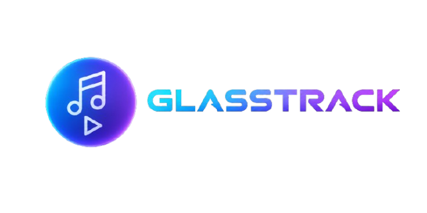

Sin canción cargada
Sube tus archivos MP3
0:00
0:00
- Carga canciones para comenzar
No es una separación perfecta (eso necesitaría inteligencia artificial): resalta o reduce lo que está centrado en la mezcla (casi siempre la voz), aplicado solo en el rango de frecuencia típico de la voz (200Hz-5kHz) para que el bajo y la batería casi no se vean afectados.
Sin letra disponible.
-
Sin letra disponible.
Escribe el BPM real de la canción (lo puedes buscar en internet: "[nombre de la canción] BPM"). Con eso, la velocidad de la letra se ajusta sola para que se sincronice mejor.
-
Arrastra tu música aquí
Toca "Elegir Música" para armar tu cadena de canciones.
Arrastra un archivo .txt o .lrc aquí
El Tap-Sync general está desactivado aquí, pero puedes tocar cada palabra justo cuando se canta para marcar su tiempo exacto — usa los botones ±ms solo para ajustar fino después.
Esperando a que suene una línea con tiempo asignado...
El texto se muestra en bloques de 2–4 líneas con entrada rápida estilo kinetic.
Admite MP4/WebM/GIF locales y URLs externas de vídeo o GIF.
Estos efectos solo afectan al nuevo preview Y2K Stream.
—

Desarrollado y Diseñado por: Keylefs RT
Versión: 230.31 (Glassmorphism & DSP Engine)
Esta aplicación es un reproductor de música web de alta fidelidad, ideado para ofrecer una experiencia auditiva y visual completa directamente en el navegador. Combina una interfaz limpia basada en la estética Glassmorphism (efecto cristal traslúcido) con un potente motor de procesamiento de sonido en tiempo real (Web Audio API) y almacenamiento local persistente sin servidores externos (IndexedDB).
🎛️ Controles de Reproducción y Modos:
🔊 Motor de Audio y Ecualización (DSP):
🎤 Sistema y Estudio de Letras:
🎨 Interfaz Visual y Modos de Pantalla:
📁 Gestión de Biblioteca y Herramientas:
Creador y Desarrollador Principal: Keylefs RT
Agradecimientos: A las comunidades de desarrollo web de código abierto, a los estándares de Web Audio API por hacer posible el procesamiento digital de sonido en el navegador, y a todos los que probaron la aplicación aportando sugerencias para pulir cada detalle.
Arrastra los bordes amarillos para recortar, y la línea blanca para elegir el segundo exacto donde se conecta con la siguiente canción.
Toca cualquier tarjeta resaltada para personalizarla.